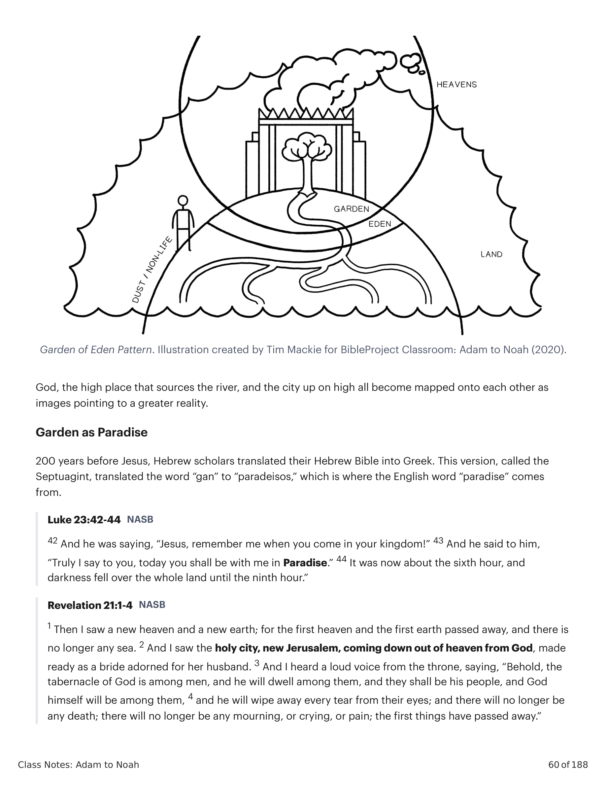
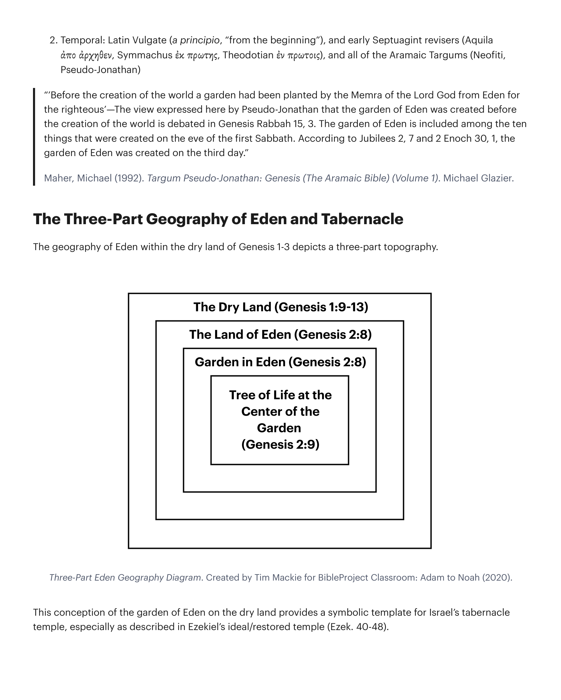
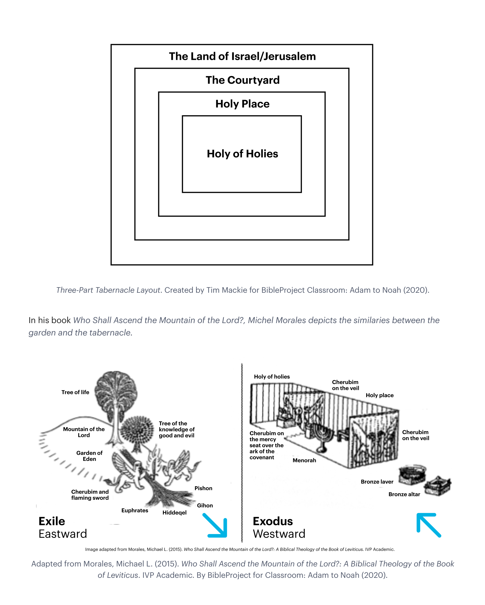
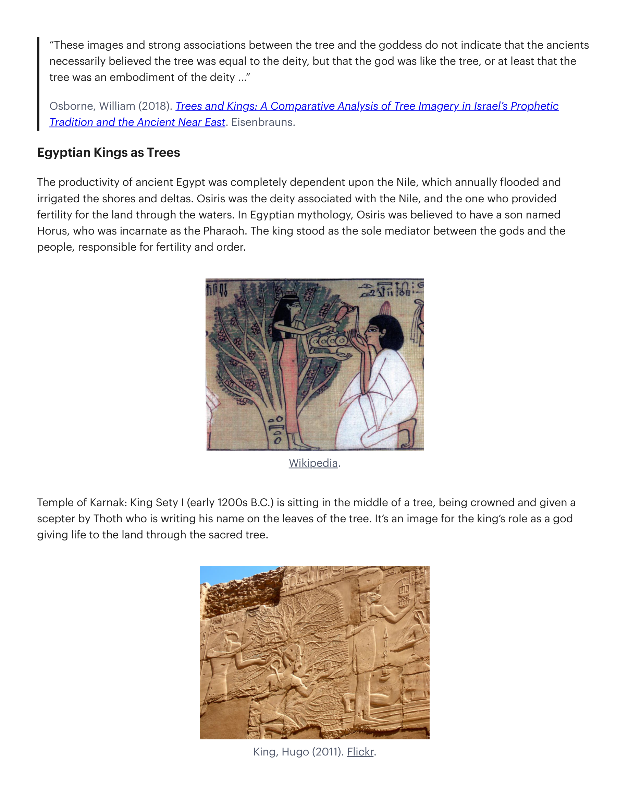
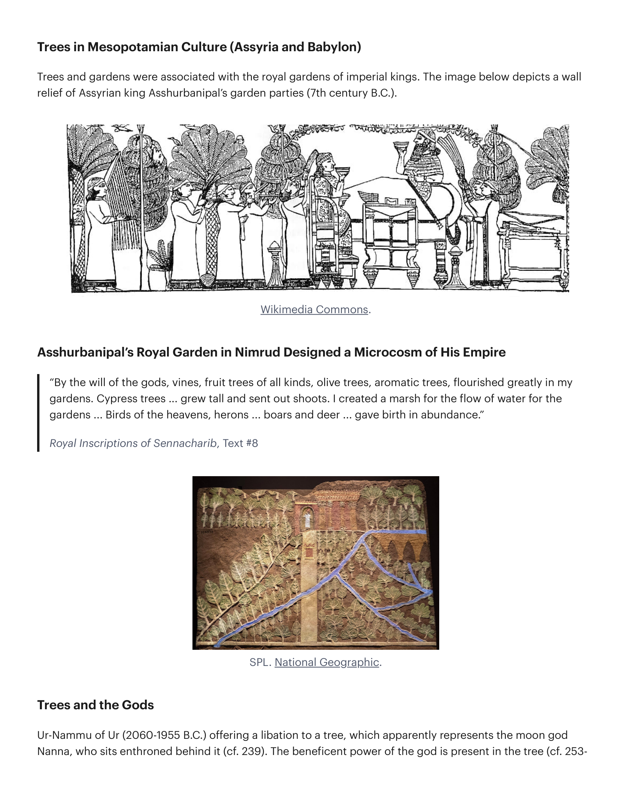
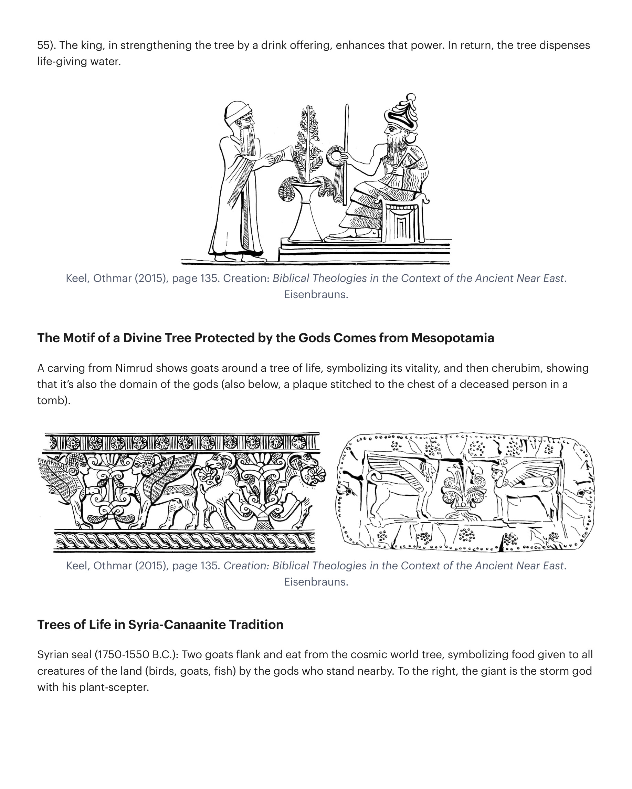
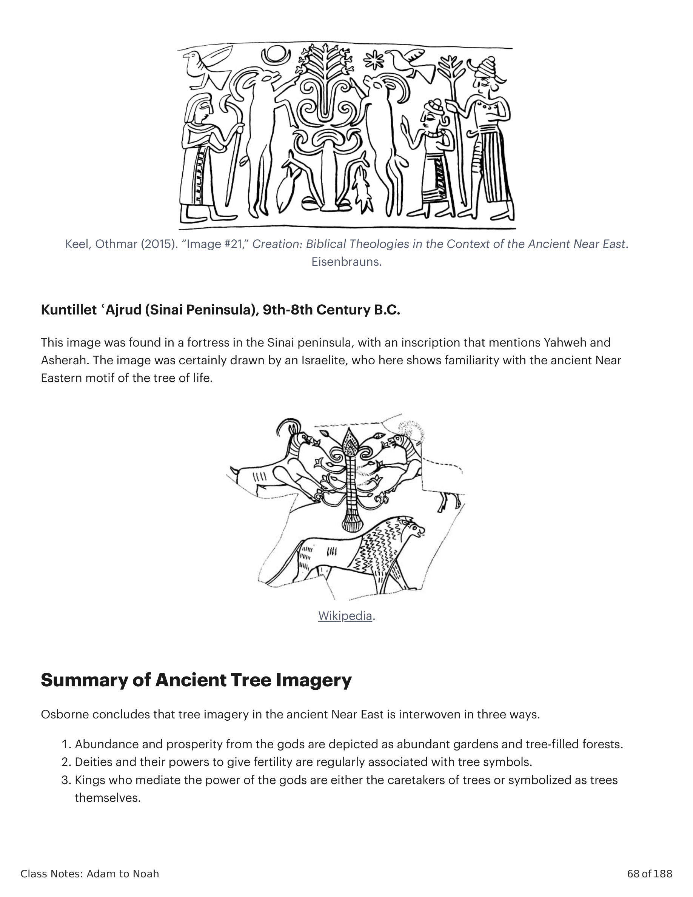

A palavra "eden" (עדן) é usada de duas maneiras sobrepostas na Bíblia Hebraica.The word "eden" (עדן) is used in two overlapping ways in the Hebrew Bible.
2 Samuel 1:24 (NKJV): "Ó filhas de Israel, chorem por Saul, que vos vestiu de escarlata com luxos (lit. 'edens'), que pôs ornamentos de ouro sobre vosso vestuário." Salmo 36:7-8 (NVI): "Quão precioso é o teu amor leal, ó Deus! Os filhos dos homens se refugiam à sombra das tuas asas. Eles se banqueteiam da abundância da tua casa; tu lhes dás de beber do teu rio de delícias (lit. 'edens')." Jeremias 51:34 (NVI): "Nabucodonosor, rei da Babilônia, nos devorou, lançou-nos em confusão, fez de nós um vaso vazio. Como uma serpente, engoliu-nos e encheu o estômago com nossas iguarias (lit. 'edens'), e então nos vomitou."2 Samuel 1:24 (NKJV): "O daughters of Israel, weep over Saul, Who clothed you in scarlet with luxuries (lit. 'edens') who put ornaments of gold on your apparel." Psalm 36:7-8 (NIV): "How priceless is your unfailing love, O God! People take refuge in the shadow of your wings. They feast on the abundance of your house; you give them drink from your river of delights (lit. 'edens')." Jeremiah 51:34 (NIV): "Nebuchadnezzar king of Babylon has devoured us, he has thrown us into confusion, he has made us an empty jar. Like a serpent he has swallowed us and filled his stomach with our delicacies (lit. 'edens'), and then has spewed us out."
A terra cósmica chamada "Deleite/Éden" é consistentemente referida de volta na Bíblia Hebraica como um lugar de encontro do Céu e da Terra, que é a fonte de toda a vida e abundância fora do Éden. Isaías 51:3 (NVI): "Pois o SENHOR certamente confortará Sião e olhará com compaixão sobre todas as suas ruínas; ele fará dos seus desertos como Éden, dos seus ermos como o jardim do SENHOR."The cosmic land called "Delight/Eden" is consistently referred back to in the Hebrew Bible as a meeting place of Heaven and Earth, which is the source of all life and abundance outside of Eden. Isaiah 51:3 (NIV): "The LORD will surely comfort Zion and will look with compassion on all her ruins; he will make her deserts like Eden, her wastelands like the garden of the LORD."
Ezequiel 31:3-4, 9 (NVI): "Considerai a Assíria, outrora um cedro no Líbano, com belos ramos que davam sombra à floresta; ele se elevou ao alto, seu topo acima da espessa folhagem. As águas o nutriram, fontes profundas o fizeram crescer alto; seus riachos corriam ao redor de sua base e enviavam seus canais a todas as árvores do campo ... Fiz dele uma árvore bela, com ramos abundantes, a inveja de todas as árvores do Éden no jardim de Deus." Ezequiel 36:35 (NVI): "Dirão: 'Esta terra que estava desolada tornou-se como o jardim do Éden; as cidades que estavam em ruínas, desoladas e destruídas, agora estão fortificadas e habitadas.'" Ezequiel 28:13-14 (NAA): "Estavas no Éden, jardim de Deus ... Estavas no monte santo de Deus; andavas no meio das pedras de fogo." Salmo 46:1-7 (NAA).Ezekiel 31:3-4, 9 (NIV): "Consider Assyria once a cedar in Lebanon, with beautiful branches overshadowing the forest; it towered on high, its top above the thick foliage. The waters nourished it, deep springs made it grow tall; their streams flowed all around its base and sent their channels to all the trees of the field ... I made it beautiful with abundant branches, the envy of all the trees of Eden in the garden of God." Ezekiel 36:35 (NIV): "They will say, 'This land that was laid waste has become like the garden of Eden; the cities that were lying in ruins, desolate and destroyed, are now fortified and inhabited.'" Ezekiel 28:13-14 (NASB): "You were in Eden, the garden of God ... You were on the holy mountain of God; you walked in the midst of the stones of fire." Psalm 46:1-7 (NASB).

Deus, o lugar alto que é a fonte do rio, e a cidade no alto, todos se tornam mapeados uns sobre os outros como imagens apontando para uma realidade maior.God, the high place that sources the river, and the city up on high all become mapped onto each other as images pointing to a greater reality.
200 anos antes de Jesus, eruditos hebreus traduziram sua Bíblia Hebraica para o grego. Esta versão, chamada Septuaginta, traduziu a palavra "gan" por "paradeisos", que é de onde vem a palavra em inglês "paradise". Lucas 23:42-44 (NAA): "E ele dizia: 'Jesus, lembra-te de mim quando vieres no teu reino!' E ele lhe disse: 'Em verdade te digo que hoje estarás comigo no Paraíso.' E era já cerca da hora sexta, e houve escuridão sobre toda a terra até a hora nona." Apocalipse 21:1-4 (NAA): "1 Vi um novo céu e uma nova terra; pois o primeiro céu e a primeira terra passaram, e o mar já não existe mais. 2 Vi a santa cidade, a nova Jerusalém, descendo do céu da parte de Deus, preparada como uma noiva adornada para o seu marido. 3 Ouvi uma grande voz vinda do trono, dizendo: 'Eis o tabernáculo de Deus entre os homens, e ele habitará entre eles, e eles serão o seu povo, e o próprio Deus estará com eles, 4 e enxugará de seus olhos toda lágrima; e não haverá mais morte, nem haverá mais luto, nem pranto, nem dor; as primeiras coisas passaram.'"200 years before Jesus, Hebrew scholars translated their Hebrew Bible into Greek. This version, called the Septuagint, translated the word "gan" to "paradeisos," which is where the English word "paradise" comes from. Luke 23:42-44 (NASB): "And he was saying, 'Jesus, remember me when you come in your kingdom!' 43 And he said to him, 'Truly I say to you, today you shall be with me in Paradise.' 44 It was now about the sixth hour, and darkness fell over the whole land until the ninth hour." Revelation 21:1-4 (NASB): "1 Then I saw a new heaven and a new earth; for the first heaven and the first earth passed away, and there is no longer any sea. 2 And I saw the holy city, new Jerusalem, coming down out of heaven from God, made ready as a bride adorned for her husband. 3 And I heard a loud voice from the throne, saying, 'Behold, the tabernacle of God is among men, and he will dwell among them, and they shall be his people, and God himself will be among them, 4 and he will wipe away every tear from their eyes; and there will no longer be any death; there will no longer be any mourning, or crying, or pain; the first things have passed away.'"
Apocalipse 22:1-2 (NAA): "1 Então ele me mostrou um rio da água da vida, claro como cristal, que procedia do trono de Deus e do Cordeiro, 2 no meio da sua rua. De ambos os lados do rio estava a árvore da vida, que dava doze tipos de fruto, produzindo seu fruto cada mês; e as folhas da árvore eram para a cura das nações."Revelation 22:1-2 (NASB): "1 Then he showed me a river of the water of life, clear as crystal, coming from the throne of God and of the Lamb, 2 in the middle of its street. On either side of the river was the tree of life, bearing twelve kinds of fruit, yielding its fruit every month; and the leaves of the tree were for the healing of the nations."
A palavra qedem pode ser usada geograficamente (significar "leste") ou temporalmente (significar "antes"). O uso é retomado e elaborado em Gênesis 3:24 e 4:16. Gênesis 3:24 (NAA): "Assim, expulsou o homem; e, a leste (מקדם) do jardim do Éden, colocou os querubins e a espada flamejante que se voltava em todas as direções para guardar o caminho da árvore da vida." Gênesis 4:16 (NAA): "Então Caim saiu da presença do SENHOR, e habitou na terra de Node, a leste (קדמת) do Éden." Este uso geográfico de Éden é claro, mas a questão é se a palavra "miqeddem" tem um duplo sentido em Gênesis 2:8, porque o uso temporal desta palavra é muito comum. Isaías 45:21 (NVI): "Declarai o que há de ser, apresentai-o—conselhai-vos juntos. Quem o anunciou há muito tempo, quem o declarou desde o passado distante (מקדם)? Não fui eu, o SENHOR? E não há outro Deus além de mim, um Deus justo e Salvador; não há nenhum além de mim." Miquéias 5:2 (NVI): "Mas tu, Belém Efrata, embora pequena entre os clãs de Judá, de ti me sairá aquele que será o governante sobre Israel, cujas origens são desde a antiguidade (מקדם), dos tempos antigos." Habacuque 1:12 (NVI): "SENHOR, não és tu desde a antiguidade (מקדם)? Meu Deus, meu Santo, tu nunca morrerás." Salmo 77:11-12 (NVI): "Lembrar-me-ei das obras do SENHOR; sim, lembrarei das tuas maravilhas de long ago (מקדם). Considerarei todas as tuas obras e meditarei em todos os teus feitos poderosos."The word qedem can be used geographically (to mean "east") or temporally (to mean "before"). The use is picked up and elaborated in Genesis 3:24 and 4:16. Genesis 3:24 (NASB): "So he drove the man out; and at the east (מקדם) of the garden of Eden, he stationed the cherubim and the flaming sword which turned every direction to guard the way to the tree of life." Genesis 4:16 (NASB): "Then Cain went out from the presence of the LORD, and settled in the land of Nod, east (קדמת) of Eden." This geographical use of Eden is clear, but the question is whether the word "miqeddem" has a double meaning in Genesis 2:8, because the temporal use of this word is very common. Isaiah 45:21 (NIV): "Declare what is to be, present it—let them take counsel together. Who foretold this long ago, who declared it from the distant past (מקדם)? Was it not I, the LORD? And there is no God apart from me, a righteous God and a Savior; there is none but me." Micah 5:2 (NIV): "But you, Bethlehem Ephrathah, though you are small among the clans of Judah, out of you will come for me one who will be ruler over Israel, whose origins are from of old (מקדם), from ancient times." Habakkuk 1:12 (NIV): "LORD, are you not from antiquity (מקדם)? My God, my Holy One, you will never die." Psalm 77:11-12 (NIV): "I will remember the deeds of the LORD; yes, I will remember your miracles of long ago (מקדם). I will consider all your works and meditate on all your mighty deeds."
Na história mais antiga de interpretação, a palavra foi entendida de ambas as maneiras. 1. Geográfica: Grego Antigo (κατα ἀνατολας, "do leste"). 2. Temporal: Vulgata Latina (a principio, "desde o princípio"), e primeiros revisores da Septuaginta (Aquila ἀπο ἀρχηθεν, Símaco ἐκ πρωτης, Teodocião ἐν πρωτοις), e todos os Targuns Aramaicos (Neofiti, Pseudo-Jonathan). "'Antes da criação do mundo, um jardim havia sido plantado pela Memra do Senhor Deus desde Éden para os justos'—A visão expressa aqui por Pseudo-Jonathan de que o jardim do Éden foi criado antes da criação do mundo é debatida em Gênesis Rabbah 15, 3. O jardim do Éden está incluído entre as dez coisas que foram criadas na véspera do primeiro Sabá. Segundo Jubileus 2, 7 e 2 Enoque 30, 1, o jardim do Éden foi criado no terceiro dia." Maher, Michael (1992). Targum Pseudo-Jonathan: Genesis (The Aramaic Bible) (Volume 1). Michael Glazier.In the earliest history of interpretation, the word was understood both ways. 1. Geographical: Old Greek (κατα ἀνατολας, "from eastward"). 2. Temporal: Latin Vulgate (a principio, "from the beginning"), and early Septuagint revisers (Aquila ἀπο ἀρχηθεν, Symmachus ἐκ πρωτης, Theodotian ἐν πρωτοις), and all of the Aramaic Targums (Neofiti, Pseudo-Jonathan). "'Before the creation of the world a garden had been planted by the Memra of the Lord God from Eden for the righteous'—The view expressed here by Pseudo-Jonathan that the garden of Eden was created before the creation of the world is debated in Genesis Rabbah 15, 3. The garden of Eden is included among the ten things that were created on the eve of the first Sabbath. According to Jubilees 2, 7 and 2 Enoch 30, 1, the garden of Eden was created on the third day." Maher, Michael (1992). Targum Pseudo-Jonathan: Genesis (The Aramaic Bible) (Volume 1). Michael Glazier.
A geografia do Éden dentro da terra seca de Gênesis 1-3 retrata uma topografia de três partes.The geography of Eden within the dry land of Genesis 1-3 depicts a three-part topography.

Esta concepção do jardim do Éden na terra seca fornece um modelo simbólico para o templo-tabernáculo de Israel, especialmente conforme descrito no templo ideal/restaurado de Ezequiel (Ez 40-48).This conception of the garden of Eden on the dry land provides a symbolic template for Israel's tabernacle temple, especially as described in Ezekiel's ideal/restored temple (Ezek. 40-48).

Em seu livro Who Shall Ascend the Mountain of the Lord?, Michel Morales retrata as semelhanças entre o jardim e o tabernáculo. Adaptado de Morales, Michael L. (2015). Who Shall Ascend the Mountain of the Lord?: A Biblical Theology of the Book of Leviticus. IVP Academic.In his book Who Shall Ascend the Mountain of the Lord?, Michel Morales depicts the similaries between the garden and the tabernacle. Adapted from Morales, Michael L. (2015). Who Shall Ascend the Mountain of the Lord?: A Biblical Theology of the Book of Leviticus. IVP Academic. By BibleProject for Classroom: Adam to Noah (2020).
A árvore da vida é a árvore no centro do jardim que confere vida eterna. Gênesis 2:9 Tradução do Instrutor: "E Yahweh Deus fez brotar da terra toda árvore que é agradável à vista e boa para comer; e a árvore da vida estava no meio do jardim, e a árvore do conhecimento do bem e do mal." Gênesis 3:22 (NAA): "Então o SENHOR Deus disse: 'Eis que o homem se tornou como um de nós, conhecedor do bem e do mal; agora, pois, para que não estenda a sua mão, e tome também da árvore da vida, e coma, e viva para sempre...'"The tree of life is the tree in the center of the garden that imparts eternal life. Genesis 2:9 Instructor's Translation: "And Yahweh God caused to sprout every tree from the ground that is pleasing to the sight and good for food; and the tree of life was in the middle of the garden, and the tree of knowing of good and bad." Genesis 3:22 (NASB): "Then the LORD God said, 'Behold, the man has become like one of us, knowing good and evil; and now, he might stretch out his hand, and take also from the tree of life, and eat, and live forever.'"
"[A árvore da vida] representa uma vida além da vida original que Deus soprou no humano. O primeiro humano por natureza é suscetível à morte ... No entanto, comer continuamente da árvore poderia renovar a vida e prevenir a morte. Além da desobediência ao comando de Deus, os mortais tinham acesso a esta árvore ... A árvore da vida permite à humanidade transcender sua mortalidade, o estado em que foi criada no sexto dia, para que possa mover-se a uma dimensão superior ... à vida eterna e imortalidade. Ao participar deste ... fruto pela fé, participa-se desta vida eterna. Esta mais alta potência de vida estava disponível no jardim e torna-se novamente disponível a nós à medida que reentramos no jardim-templo através do segundo Adão ... e aguardamos a ressurreição de nossos corpos.""[The tree of life] represents life that is beyond the original life that God breathed into human. The first human by nature is susceptible to death ... Nevertheless, continued eating from the tree could renew life and prevent death. Apart from disobedience to God's command, mortals had access to this tree ... The tree of life allows humanity to transcend its mortality, the state in which it was created on the sixth day, so it can move to a higher dimension ... to eternal life and immortality. As one partakes of this ... fruit by faith, one participates in this eternal life. This highest potency of life was available in the garden and becomes once again available to us as we reenter the temple-garden through the second Adam ... and look forward to the resurrection of our bodies."
Waltke, Bruce; Yu, Charles (2007). An Old Testament Theology: An Exegetical, Canonical, and Thematic Approach. Zondervan.Waltke, Bruce; Yu, Charles (2007). An Old Testament Theology: An Exegetical, Canonical, and Thematic Approach. Zondervan.
A árvore da vida era uma imagem icônica no mundo antigo. É útil comparar e contrastar o significado desta árvore na cultura mesopotâmia, cananeia e egípcia com o retrato bíblico. "Como qualquer turista perspicaz rapidamente observa, a paisagem da maior parte do Oriente Próximo é predominantemente árida e estéril. A terra é composta de inúmeros tons de marrom, com apenas breves interjeições de verde e azul. Quanto mais alto em elevação se vai, mais verde o quadro se torna. Consequentemente, montanhas e rios, juntamente com as florestas que os adornam, parecem ser pontos focais naturais de qualquer um que vive ou viaja nestas terras. Os povos antigos, do remoto mundo ocidental do Egito às margens orientais dos pântanos da Babilônia, viviam na terra, não simplesmente sobre ela. Eram todos culturas agrárias, cuja subsistência era encontrada e mantida entre a sombra, o fruto, o abrigo e a beleza de suas árvores. Como resultado, pode haver pouca dúvida de que este estilo de vida teve um efeito significativo nestas culturas antigas e na maneira como percebiam o mundo. As árvores eram alguns dos elementos mais sagrados nas civilizações do antigo Oriente Próximo."The tree of life was an iconic image in the ancient world. It's helpful to compare and contrast this tree's significance in Mesopotamian, Canaanite, and Egyptian culture with the biblical portrait. "As any astute tourist quickly observes, the landscape of much the Near East is predominantly stark and barren. The land is comprised of innumerable shades of brown, with only brief interjections of green and blue. The higher in elevation one goes, the greener the picture becomes. Consequently, mountains and rivers, along with the forests that adorn them, seem to be natural focal points anyone who lives or travels in these lands. The ancient peoples, from the remote western world of Egypt to the eastern river marshes of Babylonia, lived in the land, not simply on it. They were all agrarian cultures, whose livelihood was found and maintained among the shade, fruit, shelter, and beauty of their trees. As a result, there can be little doubt that this lifestyle had a significant effect on these ancient cultures and the way they perceived the world. Trees were some of the most sacred elements in ancient near Eastern civilizations."
Osborne, William (2018). Trees and Kings: A Comparative Analysis of Tree Imagery in Israel's Prophetic Tradition and the Ancient Near East. Eisenbrauns.Osborne, William (2018). Trees and Kings: A Comparative Analysis of Tree Imagery in Israel's Prophetic Tradition and the Ancient Near East. Eisenbrauns.
Nut, a deusa do céu, que frequentemente é associada à cúpula do céu e ao dom da chuva, também é frequentemente retratada como uma árvore que supre fruto, água e vida para a terra. "Estas imagens e fortes associações entre a árvore e a deusa não indicam que os antigos necessariamente acreditavam que a árvore era igual à divindade, mas que o deus era como a árvore, ou pelo menos que a árvore era uma encarnação da divindade ..." Osborne, William (2018).Nut, the sky goddess, who is often associated with the sky-dome and the gift of rain, is also often portrayed as a tree that supplies fruit, water, and life for the land. "These images and strong associations between the tree and the goddess do not indicate that the ancients necessarily believed the tree was equal to the deity, but that the god was like the tree, or at least that the tree was an embodiment of the deity ..." Osborne, William (2018). Trees and Kings: A Comparative Analysis of Tree Imagery in Israel's Prophetic Tradition and the Ancient Near East. Eisenbrauns.
A produtividade do antigo Egito dependia completamente do Nilo, que inundava anualmente e irrigava as margens e deltas. Osíris era a divindade associada ao Nilo, e aquele que provia fertilidade para a terra através das águas. Na mitologia egípcia, Osíris tinha um filho chamado Hórus, que se encarnava como o Faraó. O rei estava como o único mediador entre os deuses e o povo, responsável pela fertilidade e ordem. Templo de Karnak: O rei Sety I (início de 1200 a.C.) está sentado no meio de uma árvore, sendo coroado e recebendo um cetro de Thoth, que está escrevendo seu nome nas folhas da árvore. É uma imagem para o papel do rei como um deus dando vida à terra através da árvore sagrada. King, Hugo (2011). Flickr.The productivity of ancient Egypt was completely dependent upon the Nile, which annually flooded and irrigated the shores and deltas. Osiris was the deity associated with the Nile, and the one who provided fertility for the land through the waters. In Egyptian mythology, Osiris was believed to have a son named Horus, who was incarnate as the Pharaoh. The king stood as the sole mediator between the gods and the people, responsible for fertility and order. Temple of Karnak: King Sety I (early 1200s B.C.) is sitting in the middle of a tree, being crowned and given a scepter by Thoth who is writing his name on the leaves of the tree. It's an image for the king's role as a god giving life to the land through the sacred tree. King, Hugo (2011). Flickr.

Árvores e jardins eram associados aos jardins reais de reis imperiais. A imagem abaixo retrata um relevo de parede dos banquetes de jardim do rei assírio Assurbanípal (séc. 7 a.C.). Jardim Real de Assurbanípal em Nimrud Desenhado como um Microcosmo de Seu Império: "Pela vontade dos deuses, videiras, árvores frutíferas de todo tipo, oliveiras, árvores aromáticas, floresceram grandemente em meus jardins. Ciprestes ... cresceram altos e brotaram. Criei um pântano para o fluxo de água para os jardins ... Aves dos céus, garças ... javalis e veados ... deram à luz em abundância." Royal Inscriptions of Sennacharib, Text #8. SPL. National Geographic.Trees and gardens were associated with the royal gardens of imperial kings. The image below depicts a wall relief of Assyrian king Asshurbanipal's garden parties (7th century B.C.). Asshurbanipal's Royal Garden in Nimrud Designed a Microcosm of His Empire: "By the will of the gods, vines, fruit trees of all kinds, olive trees, aromatic trees, flourished greatly in my gardens. Cypress trees ... grew tall and sent out shoots. I created a marsh for the flow of water for the gardens ... Birds of the heavens, herons ... boars and deer ... gave birth in abundance." Royal Inscriptions of Sennacharib, Text #8. SPL. National Geographic.

Árvores e os Deuses. Ur-Nammu de Ur (2060-1955 a.C.) oferecendo uma libação a uma árvore, que aparentemente representa o deus lua Nanna, que está entronizado atrás dela. O poder beneficente do deus está presente na árvore. O rei, fortalecendo a árvore com uma oferta de bebida, aumenta aquele poder. Em troca, a árvore dispensa água que dá vida. Keel, Othmar (2015), p. 135. Creation: Biblical Theologies in the Context of the Ancient Near East. Eisenbrauns. O Motif de uma Árvore Divina Protegida pelos Deuses Vem da Mesopotâmia. Uma escultura de Nimrud mostra cabras ao redor de uma árvore da vida, simbolizando sua vitalidade, e então querubins, mostrando que é também o domínio dos deuses (também abaixo, uma placa costurada ao peito de um falecido em um túmulo). Keel, Othmar (2015), p. 135.Trees and the Gods. Ur-Nammu of Ur (2060-1955 B.C.) offering a libation to a tree, which apparently represents the moon god Nanna, who sits enthroned behind it. The beneficent power of the god is present in the tree. The king, in strengthening the tree by a drink offering, enhances that power. In return, the tree dispenses life-giving water. Keel, Othmar (2015), page 135. Creation: Biblical Theologies in the Context of the Ancient Near East. Eisenbrauns. The Motif of a Divine Tree Protected by the Gods Comes from Mesopotamia. A carving from Nimrud shows goats around a tree of life, symbolizing its vitality, and then cherubim, showing that it's also the domain of the gods (also below, a plaque stitched to the chest of a deceased person in a tomb). Keel, Othmar (2015), page 135. Creation: Biblical Theologies in the Context of the Ancient Near East. Eisenbrauns.

Selo sírio (1750-1550 a.C.): Dois cabritos flanqueiam e comem da árvore cósmica mundial, simbolizando comida dada a todas as criaturas da terra (aves, cabritos, peixes) pelos deuses que estão perto. À direita, o gigante é o deus da tempestade com seu cetro-planta. Keel, Othmar (2015). Kuntillet 'Ajrud (Península do Sinai), séc. 9-8 a.C. Esta imagem foi encontrada em uma fortaleza na península do Sinai, com uma inscrição que menciona Yahweh e Asherah. A imagem certamente foi desenhada por um israelita, que aqui mostra familiaridade com o motif do antigo Oriente Próximo da árvore da vida. Wikipedia.Syrian seal (1750-1550 B.C.): Two goats flank and eat from the cosmic world tree, symbolizing food given to all creatures of the land (birds, goats, fish) by the gods who stand nearby. To the right, the giant is the storm god with his plant-scepter. Keel, Othmar (2015). "Image #21," Creation: Biblical Theologies in the Context of the Ancient Near East. Eisenbrauns. Kuntillet 'Ajrud (Sinai Peninsula), 9th-8th Century B.C. This image was found in a fortress in the Sinai peninsula, with an inscription that mentions Yahweh and Asherah. The image was certainly drawn by an Israelite, who here shows familiarity with the ancient Near Eastern motif of the tree of life. Wikipedia.

Osborne conclui que a imagética de árvore no antigo Oriente Próximo está entrelaçada de três maneiras. 1. Abundância e prosperidade dos deuses são retratadas como jardins abundantes e florestas cheias de árvores. 2. Divindades e seus poderes de dar fertilidade são regularmente associadas a símbolos de árvores. 3. Reis que medeiam o poder dos deuses são ou os cuidadores das árvores ou simbolizados como árvores elas mesmas.Osborne concludes that tree imagery in the ancient Near East is interwoven in three ways. 1. Abundance and prosperity from the gods are depicted as abundant gardens and tree-filled forests. 2. Deities and their powers to give fertility are regularly associated with tree symbols. 3. Kings who mediate the power of the gods are either the caretakers of trees or symbolized as trees themselves.
As imagens bíblicas assumem vida própria e um significado único dentro da Bíblia. Mas também estão enraizadas nas culturas antigas dos vizinhos de Israel. Ver a imagética de jardim/árvore como um padrão de design do Céu na Terra em seu contexto antigo é útil para entender por que a imagética de jardim é tão penetrante por toda a Bíblia. Era a linguagem do Céu e da Terra no tempo dos autores bíblicos. Em Gênesis 1-2, toda a humanidade recebe a tarefa real de zelar pelo jardim e suas árvores. Isso se encaixa com o padrão da imagem de Deus, onde toda a humanidade assume o papel do rei. A árvore não é divina mas um símbolo de vida divina e abundância que pode ser internalizada (comida). A árvore não é mágica; em vez disso, é uma imagem de proximidade à fonte da vida divina.The biblical images take on a life of their own and a unique meaning within the Bible. But they are also rooted in the ancient cultures of Israel's neighbors. Seeing the garden/tree imagery as a design pattern of Heaven on Earth in its ancient context is helpful in understanding why garden imagery is so pervasive throughout the Bible. It was the language of Heaven and Earth in the time of the biblical authors. In Genesis 1-2, all humanity is given the royal task of stewarding the garden and its trees. This fits with the pattern of the image of God, where all humanity assumes the role of the king. The tree is not divine but a symbol of divine life and abundance that can be internalized (eaten). The tree is not magic; rather is is an image of proximity to the source of divine life.
Os autores do Novo Testamento constroem sobre esta imagética para comunicar o que foi realizado através da vida e morte de Jesus. Tome por exemplo a abertura do Evangelho de João. João 1:14 (NAA): "E o Verbo se fez carne, e habitou entre nós, e vimos a sua glória, glória como do unigênito do Pai, cheio de graça e de verdade." Quando você olha para Jesus, você está vendo a glória divina que antes só era acessível por um sacerdote, uma vez por ano, no templo. Mas agora, o que estava contido "no meio" é agora desencadeado em Jesus. Ao longo do resto do Evangelho, João continua a usar esta imagética de Éden/templo, como quando Jesus é chamado a água da vida, a videira da vida de Deus, o novo templo, e quando é crucificado e levantado no lugar alto.The New Testament authors build upon this imagery to communicate what was accomplished through the life and death of Jesus. Take for example the opening of John's Gospel. John 1:14 (NASB): "And the Word became flesh, and dwelt among us, and we saw his glory, glory as of the only begotten from the Father, full of grace and truth." When you look at Jesus, you are seeing the divine glory that used to only be accessible by one priest, one time a year in the temple. But now, what was contained "in the middle" is now unleashed in Jesus. Throughout the rest of the Gospel, John continues to use this Eden/temple imagery, like when Jesus is called the water of life, the vine of God's life, the new temple, and when he is crucified and lifted up on the high place.
O jardim do Éden é mais do que apenas um pedaço de terra seguro e fértil — é um símbolo de uma realidade maior. O que o jardim do Éden representa?The garden of Eden is more than just a safe and fertile piece of land—it's a symbol of a bigger reality. What does the garden of Eden represent?